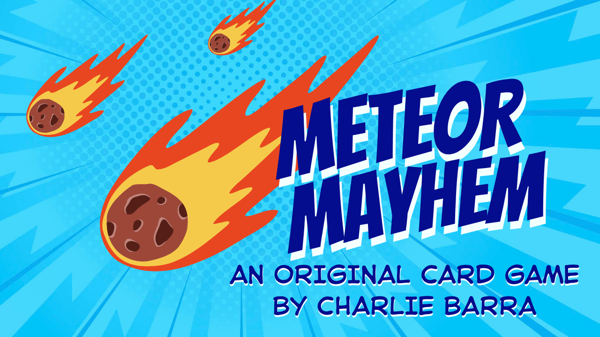

Case Study
Meteor Mayhem
An original multiplayer strategy card game exploring resource management, player interaction, balancing, and probability reasoning.
View Case StudyWork
These projects span game design, programming, and interactive world design. Each one taught me something different about how systems influence the choices people make.
Featured Project
My flagship design project documenting the complete process from concept to playable prototype.

Case Study
An original multiplayer strategy card game exploring resource management, player interaction, balancing, and probability reasoning.
View Case StudyExplore More

Programming
Four chronological Python projects covering inventory, game state, randomization, graphics, and turn-based multiplayer logic.
Explore Programming →
Interactive World Design
Personal explorations in Roblox Studio using building and Lua scripting to test atmosphere, navigation, and interaction.
Explore World Design →Currently Building
I am working on an interactive Python game, a TCG matchup simulator, and an interactive learning sandbox. I’ll publish each one when there is a working prototype and enough process evidence to make the page useful.